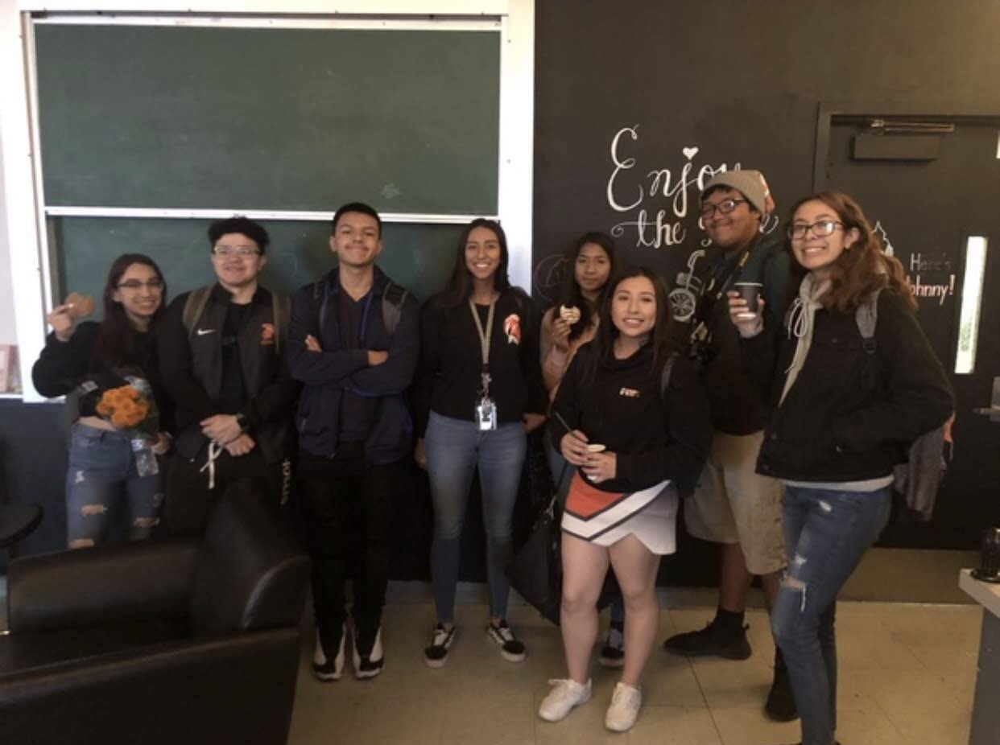
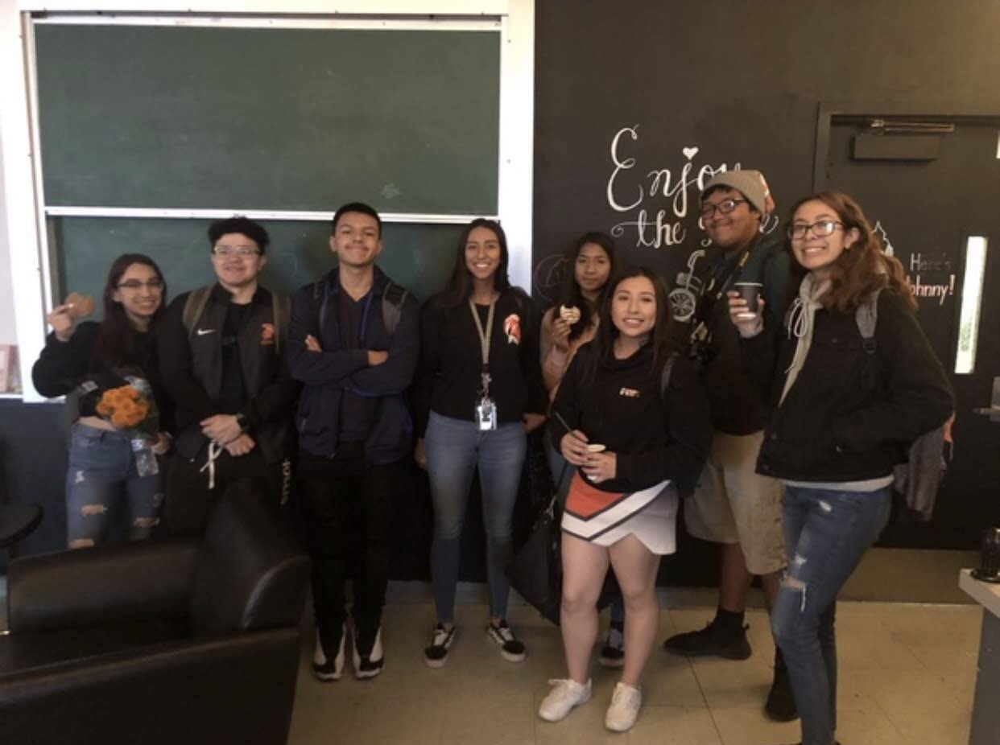
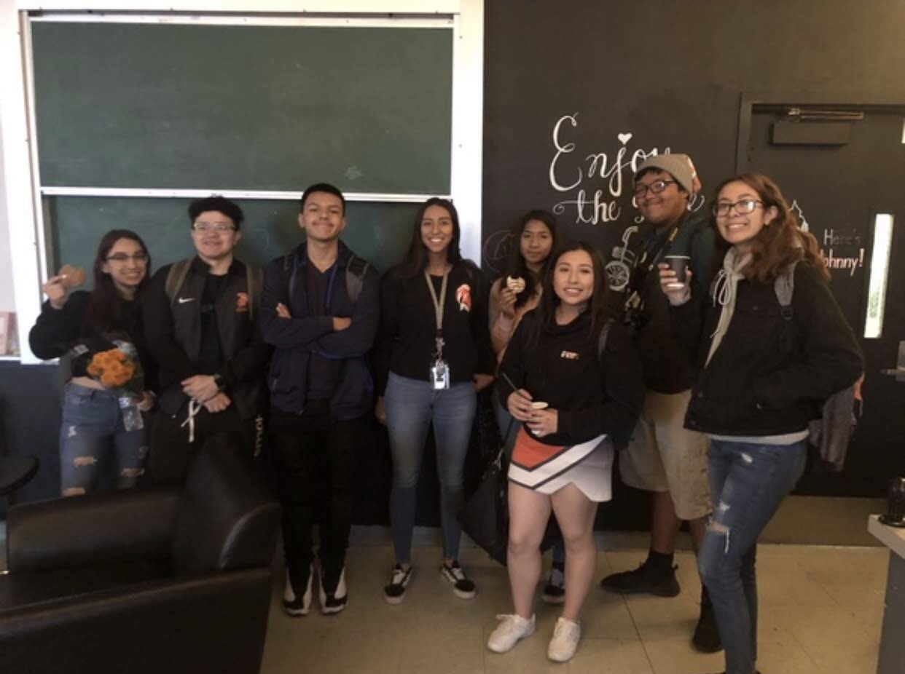

Emily Mirafuentes
Hi there! My name is Emily Mirafuentes and I am first-year student studying sociology at the University of California, Riverside.
Throughout my life, I have always been told to not only enjoy every moment, but to also do everything I can to have a bright future. In highscool, I made sure to join clubs and different organizations which would benefit me later on.One of the main parts of my highschool experience was being an avid student and later becoming and avid tutor. I was capable of gaining leadership skills after having to tutor my group of students and making sure we shared a special bond. This experience helped improve my organizational, social, and creative skills. During this time I was also a part of my high school's varsity cheer team; I was able to learn the importance of time management, since I would still have to be on top of my school work. Despite the different parts of my life I had to balance,I was still able to graduate with high honors as number thirty-five in our class.
With all my hard work I was able to be admitted to the University of California, Riverside where I have decided to be a part of the College of Humanities and Social Sciences. At first arriving on campus was a nerve wrecking experience, however after I had settled in I became more independent.In the first few weeks of the Fall 2019 quarter I was able join Latino Union, a community service organization. Throughout my time with Latino Union I have had the opportunity to volunteer for different organizations such as Habitat for Humanity and Young at Heart. During my first year I have been able to maintain my grades and to also be elected as the Fundraising Chair for the upcoming academic year. However, I am excited for the upcoming opportunites and adventures that may occur in the near future.
Experience
AVID Tutor
• Assisted the teacher with grading and inputing them into the system
• Lead students during tutorial sessions
• Planned activities alongside the teacher and other tutors
Latino Union
• Volunteered in various forms of community service
• Was elected as Fundraising Chair for 2020-2021
R'Pantry Volunteer
• Responisble for checking students didn't surpass the limit
• Helped studnets input information into system during checkout
• Restocked the shelves if necessary
• Kept track of inventory
Education
Huntington Park High School
University of California Riverside
Portfolio


 

